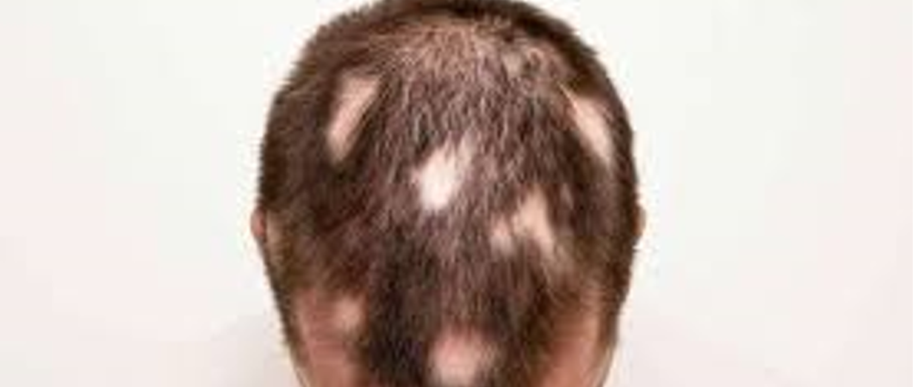

Hair Transplant Publications
Hair transplant is a cosmetic procedure used in recent years with painless and advanced techniques, it is done through the use of other donor areas of the body.

Causes of Baldness in Men and Treatment Methods
Table of contents
Baldness in men begins with hair loss at a normal rate, approximately 100 hairs per day, which grow again, without noticing any change in the density of his hair, but when the hair falls out without growing again, then the person realizes that there is a deficiency in the density of the hair, and begins to think about the reasons for this.
Get to know with Ilajak Medical site the causes and symptoms of male baldness, and what are the treatment methods? Medically or Naturally.

Causes of Baldness in Men
Men usually lose their hair when 3 main factors combine: genetics, age, and hormones. Male pattern alopecia occurs when hormone levels change throughout a man's life.
Genetic factors also contribute to the possibility of male baldness.
These three factors contribute to the gradual shrinkage of small cavities in the skin at the base of the hair, known as scalp hair follicles. This leads to thinner and shorter hair growth gradually new hair does not grow at all.

Causes of early Baldness in Youth
- Genetics: Genetic factors from a parent or a relative contribute to baldness.
- Alopecia: Alopecia areata is one of the most common skin diseases. It is defined as hair loss in a specific area of head or face hair. In some cases, hair loss may extend to the head, eyelashes, eyebrows and the body in general.
- Psychological factors: such as stress and tension.
- Organic diseases: such as anemia and deficiency of vitamins.
- Medication: such as chemotherapy, immunosuppressants, and some muscle-enhancing products.
- Infections: Some infections that affect the scalp, such as fungal infections, if not treated early.
- Hormones: such as hypothyroidism.
- Chemicals: Some chemicals for straightening and styling hair, such as gel, waxes, and some types of shampoo.
Causes of Baldness in the Forelock Area
- Baldness genes passed from parents to children.
- Age, tension, and stress.
- Sudden weight loss.
- The percentage of hormones in the body changes due to taking medications that cause hormone imbalance, such as Steroids.
- Infections on the forelock, such as fungal infections if not treated early.
Causes of Baldness in the Mid-scalp Area
- Baldness genes transmitted from parents to children
- Infections in the middle of the scalp, such as fungal infections if not treated early.
- Alopecia areata in the middle or center of the scalp.
Symptoms of Baldness in men
Baldness was evaluated using The Hamilton–Norwood scale system, as this system focuses on identifying 3 possible major patterns of hair loss, and they can be seen in:
Symptoms at the Temple
The hair begins to taper (getting thinner) gradually around the temple, and on top of the back of the head called the crown(Vertex) of the head.
Symptoms of Receding Hairline
Hair begins to taper and fade around the front of the head and sides and is often called the receding hairline.
Symptoms at the Vertex
Narrowing of the hair in the upper part of the head over time, you will not feel baldness overnight, and you will likely notice hair thinning at the top of your head for many years before baldness becomes completely noticeable.
One of the most common types of hair loss in men is the receding M-shaped hairline, where both sides recede at a rate faster than the middle of the scalp.
Treatment of Baldness in Man
- Hair Transplant: is considered the best way for treating baldness, where methods and results differ, as the results of modern methods are more satisfying and effective.
- Laser treatment: The laser is one of the safest methods of treatment, and it is effective for treating male hair loss, as it reduces inflammations of the skin pores, which stops the hair from growing again.
If hair loss is caused by a temporary condition, such as illness, medication, stress, or iron deficiency, hair loss will stop by solving the problem.

Treatment of Male Baldness Naturally (Non-Medical)
1. Onions
Onion is one of the most beneficial foods, and one of the oldest recipes used in the treatment of baldness, it increases the speed of hair growth naturally, as onions contain sulfur, which increases the body's ability to make collagen. Which is the main material for hair formation, and useful for fast hair growth.
Onions can be used in the treatment of baldness, by crushing the onion slices well, so that you can extract the juicy liquid completely, then apply the juice on the scalp, leave it for about a 15 minutes, then wash your hair well, and it is preferable to use shampoo to prevent irritation of the skin.
2. The Mixture of Castor Oil and Coconut Oil
A mixture of castor oil and coconut oil can be used to increase the hair density in the forelock of the scalp area, as both of them will increase the revival of the scalp and blood flow to the affected area of baldness, which increases hair growth significantly and in a short time.
In this type of treatment you will need: Half a cup of castor oil, in addition to half a cup of coconut oil, mix castor oil and coconut oil in a container, then use the mixture to massage the affected area with baldness, and continue the process for 5 minutes, then leave the oils on the scalp for 60 minutes, before washing them well with water, repeat the process for 2-3 times a week to achieve better results.
3. Lemon Seeds and Black Pepper
These ingredients are effective and quick recipes for getting rid of baldness naturally, as lemon seeds and black pepper stimulate the blood circulation of hair follicles, stimulating them in the scalp, and the components of this method are:
- 7 grains of lemon seeds.
- 10 grains of black pepper.
The method of preparation is as follows:
- Grind lemon seeds and pepper to get a fine powder.
- The powder is applied to bald spots in the scalp and left on them for 10-15 minutes.
- The method is repeated twice daily, and for a few weeks.
- A little lemon juice can be added to the powder if the dryness is severe.
4. Ginger and Olive Oil
Ginger stimulates blood circulation in the scalp, because it contains active biological compounds, regenerating hair follicles, and the components of this method are:
- 2 cm of ginger root.
- Two tablespoons of olive oil, or jojoba oil.
The method of preparation shall be through:
- Crush the ginger, then soak it in the oil for a few minutes.
- Put the oil with ginger pieces on the scalp, and massage for 2-3 minutes.
- Leave the mixture on the scalp for 30 minutes, then wash the hair with shampoo as usual.
- Repeat the method regularly twice a week, and for several weeks
5. Treating Baldness with Garlic
Peel the garlic, grind it well, and apply it to the affected areas, repeat it twice a day, and by continuing this process the hair is stimulated to grow again because garlic has great effectiveness in this.
6. Treating Baldness with Herbs
- It is recommended to eat Cucumbers, Carrots, and Rocket because they contain vitamin A, which is useful in treating hereditary baldness, as the cucumber or carrots are eaten after peeling. As for Rocket, can be eaten throughout the day.
- Ginseng is useful for treating baldness.
- Ginkgo plant is useful for treating baldness.
- Green tea.
- Equisetum
- Licorice plant.
- Pumpkin seed oil.
7. Treating Baldness with Oils
To treat baldness with oils, make a mixture of Rosemary oil, Thyme oil, Lavender oil, Rocket oil, Onion oil, Aloe vera oil, and Cress seed oil, where all these oils are applied to the hair, after washing it every evening.
- Always use olive oil and sesame oil.
- Boil the cardamom with olive oil, then grind it and apply it to the scalp.
Treatment of Hereditary Baldness Medically
Losing hair because of a genetic condition, you may be able to slow hair loss using some medications, such as:
1. Minoxidil
This medication can help slow hair loss in 4 to 8 months, regrow hair, it is 50% more effective for men than women.
2. Finasteride
This medicine inhibits the formation of the testosterone hormone that affects hair growth, and studies show that finasteride helps prevent hair loss by up to 99% of men with hereditary baldness and that two-thirds of these have new hair growth, and it is never recommended to stop using this drug, As you quickly lose any benefits once it is stopped.
3. Propecia
This is a prescription treatment for hereditary hair loss in men, as it works to prevent the conversion of testosterone to dihydrotestosterone so that the hair follicles are not affected and return to normal.

Ilajak Medical© | A passion for care
Latest Articles, Health News, Clinical Research, and more.
Keratoconus and cataracts , symptoms and types
What is Keratoconus, How it looks and what are the symptoms? Also, find out Keratoconus’s types and stages , Learn more with ILAJAK Medical.
Best Spa Resorts with Medical Services clinics in Turkey.
In this article, we will learn about the importance of health resorts and the treatment services they offer and the top and famous health & medical resorts in Turkey
Zirconia teeth type and costs in Turkey 2021
Zirconia dental crowns and bridges are used to treat and protect the affected teeth due to decay or fractures, etc, In this article we will learn about the advantages and drawbacks of Zirconia Crowns and bridges
Benefits of porcelain teeth and costs in Turkey 2021
Porcelain crowns and veneers are used to strengthen and protect damaged teeth due to decay or cracks or any other reason. In this article, we will discover dental porcelain and its advantages and risks.